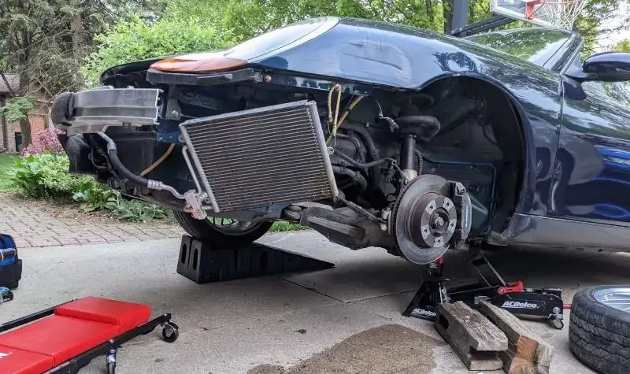

I am studying electrical engineering at Oakland University.
I also happen to be good at programming, or so I am told.
I'm currently employed as a senior software developer for Acumen Consulting.
In this role I work on a variety of projects, my primary focus has been developing a point of sales application for our customers. This application is web based, written with Typescript and Svelte. There are also some AL components, as the application is integrated with Microsoft Dynamics 365 Business Central.
I am a volunteer for FIRST in Michigan, which is an organization that offers robotics programs to elementary through highschool students. I help run competitions by setting up the field and troubleshooting problems with the robots or the field.
I've also written some software for use at events.
This application hosts a web page with captions generated by either Google Speech-to-Text API or April-ASR from an input stream on the local machine. Multiple inputs can be added and each can be set to display as a different color. Each input stream has an adjustable threshold, so if you hold the microphone away from your mouth to talk but forget to mute it, you can avoid having that conversation broadcast on the screen.
This app is a mobile friendly version of field monitor for FRC. It has also grown to include many other features. It can track how long a robot has been disconnected, provide relevant troubleshooting steps, access match logs and share them with the team. It has a checklist feature that's syncronized between everyone's devices, so tracking progress on teams having their radio programmed and passing inspection is made easier.
I've been modifying a Makita DRC200 to be controlled by a Raspberry PI.
The PI has a webcam connected to track April tags and follow a pre-programmed path while vacuuming the field.
This is more efficient than the stock control system, which often gets stuck or leaves areas uncleaned.
Oh and it's going to stream it's camera feed to YouTube. Did you expect any less?

I restored a 2000 Porsche Boxster.
It has a 2.7L flat 6 engine, 5 speed manual trasnmission, and a convertible top.
I replaced the main engine mount, a radiator, a fender, and a few suspension components.
Then, repainted the damaged body panels and had the car inspected.
It was a great learning experience for me, and I got a pretty cool car out of it.
An efficient Visual Foxpro DBF file parser written in TypeScript.
Reads the binary from a DBF file and converts it to row objects with a event based
interface.
Based on https://github.com/abstractvector/node-dbf
but provides float and integer type of numbers, specifically for Visual Fox Pro dbf files